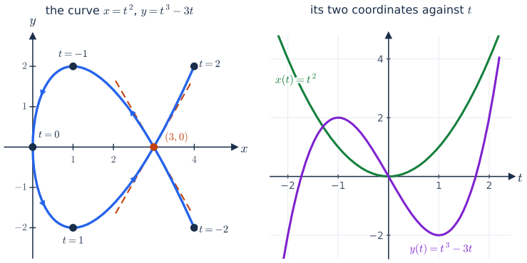
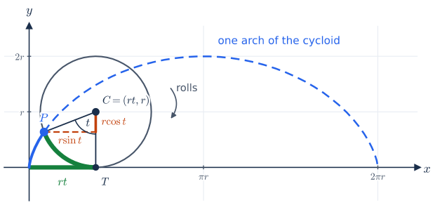
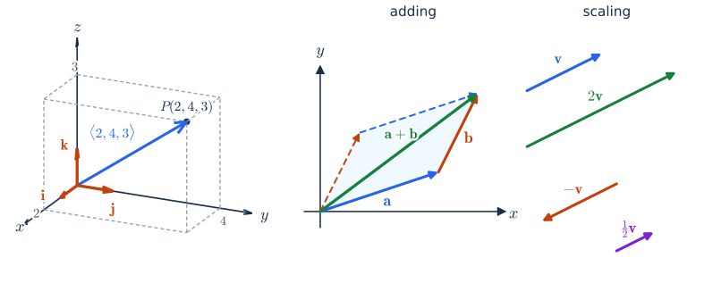

Describe curves by a moving point and by polar coordinates, and find their slopes, lengths and areas. Then learn the language of calculus in several variables, vectors in the plane and in space, and use it to describe lines, planes and motion along a path.
⏱ 270 minYou need: Modules 1 to 15, especially the chain rule (Module 5), derivatives of inverse functions (Module 6), the closed interval method (Module 8), substitution (Module 10) and arc length (Module 12)
In this module you will
Describe curves by parametric equations and in polar coordinates, and convert between descriptions
Find the tangent lines and arc lengths of parametric curves, and the slopes and areas of polar curves
Compute with vectors in the plane and in space, including lengths, angles, projections and the dot and cross products
Write equations of lines and planes in space, and find the distance from a point to a plane
Differentiate and integrate vector functions to find velocity, acceleration and the length of a space curve
Model projectile motion, and find the launch angle that gives the greatest range
1
Parametric curves
So far the curves in this series have mostly been graphs of functions, y=f(x). Many curves are not: a circle fails the vertical line test of Section 1.3, and so do the orbit of a satellite and the track of a point on a rolling wheel. An equation such as the circle’s x2+y2=25 (Section 6.4) says where such a curve goes, but not how a point travels along it. This module describes a curve the way physics describes motion: by the position of a moving point at each time t.
Suppose a point moves so that at time t it is at x=t2,y=t3−3t. Its positions at a few times:
t
x=t2
y=t3−3t
−2
4
−2
−1.5
2.25
1.125
−1
1
2
−0.5
0.25
1.375
0
0
0
0.5
0.25
−1.375
1
1
−2
1.5
2.25
−1.125
2
4
2
Plot the points in order of t and join them (Figure 16.1, left). The point comes in from the lower right, at (4,−2) when t=−2, and climbs to (1,2) at t=−1. There it turns, sweeps down through the origin at t=0 to (1,−2) at t=1, turns again and heads up to (4,2). On the way it passes through (3,0) twice, at t=−3 and at t=3, since then x=3 and y=t(t2−3)=0. The curve is not the graph of a function of x: the vertical line x=1 meets it at (1,2) and at (1,−2).

Figure 16.1
Left: the curve x=t2,y=t3−3t for −2≤t≤2, with the points of the table at whole-number t; arrows show the direction of increasing t. It crosses itself at (3,0), where it has two tangent lines (dashed; Example 16.3). Right: the graphs of x(t)=t2 and y(t)=t3−3t against t, the two functions that the curve is built from.
Definition 16.1Parametric curve
Let f and g be continuous functions on an interval I. As t runs through I, the point (f(t),g(t)) traces a parametric curve, given by the parametric equations
x=f(t),y=g(t).
The variable t is the parameter. If I=[a,b], the curve starts at its initial point(f(a),g(a)) and ends at its terminal point(f(b),g(b)).
The parameter is often time, but it need not be: in Section 16.3 it is an angle. Equations x=f(t),y=g(t) that trace a given curve are a parametrisation of it, and the direction in which the point moves as t increases is the curve’s orientation, shown in figures by arrows.
Example 16.1Circles and ellipses✓ Checked
Describe the curves traced for 0≤t≤2π by (a) x=cost,y=sint; (b) x=3cost,y=2sint; (c) x=cos2t,y=sin2t; (d) x=sint,y=cost.
(a) By the definition of sine and cosine in Section 1.4, (cost,sint) is the point of the unit circle at angle t. So as t runs from 0 to 2π the point goes once round the unit circle, anticlockwise, from (1,0) back to (1,0). Every point satisfies x2+y2=cos2t+sin2t=1.
(b) Here x/3=cost and y/2=sint, so
9x2+4y2=cos2t+sin2t=1.
This is an ellipse: the unit circle stretched horizontally by the factor 3 and vertically by the factor 2 (Section 1.5). It crosses the x-axis at ±3 and the y-axis at ±2, and the point goes round it once anticlockwise from (3,0). In general, for a,b>0,x=acost,y=bsint traces the ellipse a2x2+b2y2=1; with a=b=r it is the circle of radius r centred at the origin.
(c) Again x2+y2=1, but the point is at angle 2t: it goes round the unit circle twice as fast, and twice as t runs from 0 to 2π.
(d) Again x2+y2=sin2t+cos2t=1. The point starts at (0,1) when t=0 and is at (1,0) when t=π/2: it goes once round the circle clockwise, starting at the top.
So one curve has many parametrisations, which differ in where they start, how fast they go and in which direction.
Watch out
Do not confuse the curve with the graphs of x(t) and y(t) (Figure 16.1, right). Those graphs have t on the horizontal axis; the curve lives in the xy-plane, where t is not a coordinate but a label on its points.
Eliminating the parameter
To recognise a parametric curve, look for an equation in x and y alone that its points satisfy. That is eliminating the parameter: solve one equation for t and substitute into the other, or combine the two so that t disappears, as cos2t+sin2t=1 did in Example 16.1.
Example 16.2Eliminating the parameter✓ Checked
Eliminate the parameter, and describe each curve, for all real t: (a) x=1+2t,y=3−t; (b) x=t2,y=t3−3t; (c) x=et,y=e2t.
(a) Solve the first equation for t:t=(x−1)/2. Substitute into the second:
y=3−2x−1=27−x.
The curve is the line of slope −21 through (1,3), the point at t=0. As t runs through R, so does x=1+2t, so the whole line is traced, from left to right.
(b) Solving x=t2 for t gives two answers, t=±x. Instead, square y:
y2=t2(t2−3)2=x(x−3)2.
Conversely, every point with y2=x(x−3)2 is on the curve: such a point has x≥0 (for x<0 the right side is negative), and its two possible values y=±x(x−3) come from t=x and t=−x. So the curve is exactly y2=x(x−3)2; Figure 16.1 shows its part with −2≤t≤2.
(c)y=e2t=(et)2=x2. But x=et is always positive, and takes every positive value. So the curve is only the right half of the parabola y=x2, the part with x>0: the origin and the left half are never reached.
Watch out
Eliminating the parameter forgets which part of the curve is traced, and how. In Example 16.2(c) the equation y=x2 describes a whole parabola, but the point reaches only its right half. The curve x=sint,y=sin2t also satisfies y=x2, yet it moves back and forth for ever along the arc from (−1,1) to (1,1). After eliminating t, always check which values x and y can take.
The cycloid
A cycloid is the curve traced by a point on the rim of a wheel that rolls along a straight line: a reflector on a bicycle wheel, seen from the side. It has no simple equation in x and y, but its parametric equations follow from one fact about rolling.
Let a circle of radius r>0 roll to the right along the x-axis, without slipping, and let P be the point of the circle that touches the ground at the origin at the start. As the parameter, take the angle t (in radians) through which the circle has turned. Rolling without slipping means that the arc of the circle that has touched the ground is as long as the stretch of ground it touched. An arc of angle t on a circle of radius r has length rt, so the circle has rolled the distance rt: its centre is at C=(rt,r), above the point of contact T=(rt,0) (Figure 16.2).
Where is P? Seen from C, it started straight down, at angle −π/2, and the circle rolls to the right by turning clockwise, so after turning through t the point P is at angle −π/2−t. By the definition of sine and cosine, it is displaced from C by
(rcos(−2π−t),rsin(−2π−t))=(−rsint,−rcost).
For 0<t<π/2, as in Figure 16.2, that is rsint to the left of C and rcost below it. Adding C=(rt,r):
x=r(t−sint),y=r(1−cost).
As t runs from 0 to 2π,P traces one arch of the cycloid: up from the origin to its highest point (πr,2r) at t=π, and down to (2πr,0), where it touches the ground again. The whole cycloid is a row of such arches, each 2πr wide and 2r high.

Figure 16.2
A circle of radius r rolls to the right along the x-axis. When it has turned through the angle t, it has rolled the distance rt (the green segment, as long as the green arc), so its centre is C=(rt,r), and the point P that started at the origin is rsint to the left of C and rcost below it. The dashed part of the arch is still to come.
Lissajous curves. Let x and y oscillate at different rates: x=sin2t,y=sin3t,0≤t≤2π. The point stays in the square −1≤x≤1,−1≤y≤1, swinging left and right twice while it swings up and down three times, and returns to its start at t=2π. Such a Lissajous curve appears on an oscilloscope when two sine waves drive the horizontal and the vertical deflection of its beam, and the ratio of their frequencies can be read off the picture: this curve touches the top and the bottom of the square three times each (at t=π/6,5π/6,3π/2 and t=π/2,7π/6,11π/6) and each side twice. Trace it in the widget of Section 16.2.
2
Calculus with parametric curves
Tangent lines
Near most of its points, a parametric curve is the graph of a function and has a tangent line, whose slope comes from the chain rule. If near some t the curve x=f(t),y=g(t) is the graph of a differentiable function y=F(x), then g(t)=F(f(t)), and the chain rule (Section 5.5) gives g′(t)=F′(f(t))f′(t), that is,
dtdy=dxdy⋅dtdx,
and where dx/dt=0 you can divide by it. The theorem says when the assumption holds.
Theorem 16.1The slope of a parametric curve
Let f and g be differentiable on an open interval I, with f′ continuous on I, and let t0 be a point of I with f′(t0)=0. Then there is an open interval J around t0 on which f is one-to-one; the part of the curve x=f(t),y=g(t) with t in J is the graph of a function y=F(x); and F is differentiable at x0=f(t0), with
As t→t0,f′(t)→f′(t0), because f′ is continuous; since f′(t0)=0,f′(t) has the sign of f′(t0) for all t in some open interval J around t0. A function whose derivative is positive on an interval is strictly increasing there, and one whose derivative is negative is strictly decreasing (Module 8, a consequence of the Mean Value Theorem). Either way f is one-to-one on J, and continuous, being differentiable. So each value x=f(t) with t in J comes from exactly one t=f−1(x), and the part of the curve with t in J is the graph of F(x)=g(f−1(x)). By the theorem on the derivative of an inverse function (Section 6.2), f−1 is differentiable at x0, with derivative 1/f′(t0). By the chain rule, F is differentiable at x0 and
F′(x0)=g′(f−1(x0))(f−1)′(x0)=f′(t0)g′(t0).
∎
The continuity of f′ is what makes f one-to-one near t0. The Leibniz form is easy to remember, as if dt cancelled. Two special cases matter most.
Key idea
On the curve x=f(t),y=g(t), with f′ and g′ continuous near the parameter value in question:
where dtdy=0 and dtdx=0, the tangent line is horizontal;
where dtdx=0 and dtdy=0, the tangent line is vertical (Theorem 16.1 with the roles of x and y swapped: near such a point the curve is a graph x=G(y) with dx/dy=0);
where both are 0, the formula says nothing: look more closely.
Example 16.3Tangents of a self-crossing curve✓ Checked
For the curve x=t2,y=t3−3t of Figure 16.1, find dy/dx, the points where the tangent line is horizontal or vertical, and the tangent lines at (3,0).
Here dtdx=2t and dtdy=3t2−3=3(t−1)(t+1). For t=0,
dxdy=2t3t2−3.
Horizontal:dy/dt=0 at t=±1, where dx/dt=±2=0. The tangent line is horizontal at (1,−2) (t=1) and at (1,2) (t=−1), where y(t) turns.
Vertical:dx/dt=0 only at t=0, where dy/dt=−3=0. The tangent line is vertical at the origin, where x(t) turns.
At (3,0): the point is reached twice, at t=3 and at t=−3. At t=3 the slope is 239−3=33=3; at t=−3 it is −236=−3. So the curve has two tangent lines there, one for each pass:
y=3(x−3)andy=−3(x−3).
The slope is a function of t, not of the point: to find the slope at a point, first find the values of t that give it.
Example 16.4The slope of the cycloid✓ Checked
Find the slope of the cycloid x=r(t−sint),y=r(1−cost), and describe the curve where it touches the ground.
dtdx=r(1−cost) and dtdy=rsint. The first is 0 exactly when cost=1, at t=0,±2π,±4π,…: where P touches the ground. Elsewhere
dxdy=r(1−cost)rsint=1−costsint.
This simplifies. The addition formulas of Section 1.4, with both angles equal to t/2, give the double-angle formulas
At t=π, the top of the arch, the slope is cot2π=0. As t→0+,cos2t→1 and sin2t→0+, so the slope tends to +∞; as t→2π− it tends to −∞. So each arch leaves the ground vertically and comes back down vertically, and neighbouring arches meet in a sharp point, a cusp. There both dx/dt and dy/dt are 0: P is momentarily at rest, as the point of a rolling wheel that touches the ground always is.
Watch out
The slope is dx/dtdy/dt, not dy/dtdx/dt: the second is dx/dy, the slope with the axes swapped. And where dx/dt and dy/dt are both 0, no conclusion follows. The curve x=t3,y=t2 has a cusp at the origin (it is y=x2/3), while x=t3,y=t3 is the smooth line y=x, traced with a pause at the origin; both have dx/dt=dy/dt=0 at t=0.
Velocity. If t is time, draw an arrow from the point (x,y) with horizontal part dx/dt and vertical part dy/dt, the rates at which the point moves across and up. When dx/dt=0, its slope is dx/dtdy/dt=dxdy; when dx/dt=0 and dy/dt=0, the arrow is vertical. In either case it lies along the tangent line, pointing the way the curve is traced. Its length (dx/dt)2+(dy/dt)2 is the speed of the point (integrating it gives the distance travelled, as the next subsection shows). If both derivatives are 0, the speed is 0 and the arrow has no direction. Section 16.4 calls such an arrow a vector, and Section 16.8 calls this one the velocity.
Try it
Choose a curve and press Play, or move the slider. The blue curve is traced up to the current value of the parameter, and the orange arrow is the velocity ⟨x′,y′⟩, drawn to the scale stated under the plot; the readout gives its components and speed, rounded where needed. With the circle, check Example 16.1(a) at t=π/2: where is the point, and which way does the arrow point? With the cycloid, watch the arrow shrink to nothing as P reaches the ground (Example 16.4). For the polar curves of Section 16.3 the parameter is the angle θ, and a dashed ray shows the direction θ: with the rose r=cos3θ, watch where the point is when r<0.
Arc length
Module 12 defined the length of the graph of a function as the limit of the lengths of inscribed polygons, and found the formula L=∫ab1+f′(x)2dx. The same polygons measure a parametric curve. Cut [a,b] into n equal pieces, at a=t0<t1<⋯<tn=b, with Δt=(b−a)/n, and join the points Pi=(f(ti),g(ti)) in order. With Δxi=f(ti)−f(ti−1) and Δyi=g(ti)−g(ti−1), the chord from Pi−1 to Pi has length
(Δxi)2+(Δyi)2=(ΔtΔxi)2+(ΔtΔyi)2Δt.
As Δt→0, the two difference quotients approach f′(t) and g′(t), so the sum of the chords should approach an integral. The length of the path traced from t=a to t=b is the limit of the lengths of these polygons as n→∞, if the limit exists; when the path traces a curve once, it is the length of the curve.
Theorem 16.2Arc length of a parametric curve
If f′ and g′ are continuous on [a,b], the length of the path x=f(t),y=g(t),a≤t≤b, is
L=∫ab(dtdx)2+(dtdy)2dt.
The idea of the proof. By the Mean Value Theorem (Module 8), Δxi=f′(ti∗)Δt and Δyi=g′(ti∗∗)Δt for some points ti∗ and ti∗∗ in [ti−1,ti]. So the polygon has length
i=1∑nf′(ti∗)2+g′(ti∗∗)2Δt.
If ti∗∗ were ti∗, this would be a Riemann sum of the continuous function f′(t)2+g′(t)2, and it would approach the integral (Module 9), exactly as in Module 12. The two points may differ, but they are at most Δt apart, so g′(ti∗∗) is close to g′(ti∗) when Δt is small. The Going deeper box makes “close” precise.
Going deeperWhy the polygons approach the integral
Let Pn be the length of the polygon, and Qn=∑f′(ti∗)2+g′(ti∗)2Δt, a Riemann sum that tends to L (Module 9). For any numbers p,q and q′,
p2+q2−p2+q′2≤∣q−q′∣:
the square roots are the distances from the origin to the points (p,q) and (p,q′), which are ∣q−q′∣ apart, and by the triangle inequality two such distances differ by at most that much. So
∣Pn−Qn∣≤i=1∑n∣g′(ti∗∗)−g′(ti∗)∣Δt.
A function continuous on a closed interval is uniformly continuous there: for every ε>0 there is a δ>0 such that ∣g′(s)−g′(s′)∣<ε whenever s and s′ in [a,b] are less than δ apart. (This theorem, like the integrability of continuous functions in Module 9, needs the completeness of the real numbers; the series uses it without proof.) Once Δt<δ, every term of the sum is less than εΔt, so ∣Pn−Qn∣<ε(b−a). Hence Pn−Qn→0, and Pn→L.
If t is time, the integrand is the speed, and Theorem 16.2 says that the distance travelled is the integral of the speed: like the car of Section 1.1, whose odometer adds up its speedometer’s readings. For the graph of y=f(x), take x=t,y=f(t): the integrand becomes 1+f′(t)2, and Theorem 16.2 gives Module 12’s formula.
Example 16.5Two lengths✓ Checked
Let r>0. Find the length of (a) the circle x=rcost,y=rsint,0≤t≤2π, and (b) one arch of the cycloid x=r(t−sint),y=r(1−cost),0≤t≤2π.
(a)dtdx=−rsint and dtdy=rcost, so the integrand is r2sin2t+r2cos2t=r, and
L=∫02πrdt=2πr,
the circumference, as it should be.
(b) Square and add the derivatives of Example 16.4, and use cos2t+sin2t=1 and then 1−cost=2sin22t:
For 0≤t≤2π, the angle t/2 lies in [0,π], where sin2t≥0; so the square root is 2rsin2t. Substitute u=t/2,du=21dt (Section 10.7); the limits t=0 and t=2π become u=0 and u=π:
One arch of a cycloid is exactly 8r long, four times the diameter of the wheel, although its base is only 2πr≈6.28r. In one turn of a bicycle wheel, the reflector travels 8/(2π)≈1.273 times as far as the bicycle: about 27% further.
Watch out
sin2(t/2) is ∣sin(t/2)∣, not sin(t/2). Over two arches, 0≤t≤4π,sin2t is negative for 2π<t<4π, and ∫04π2rsin2tdt=0: nonsense for a length. Split the interval where the sign changes, or use symmetry: two arches are 16r long. In the same way, a path that retraces itself is measured with each pass: x=cos2t,y=sin2t,0≤t≤2π, has speed 2 and gives ∫02π2dt=4π, the distance travelled twice round the unit circle, not the circle’s length.
3
Polar coordinates
A radar station does not report an aircraft as “40 km east and 30 km north”. It reports a distance, 50 km, and a direction. Describing points by a distance and an angle gives polar coordinates, in which circles centred at the origin, spirals and flower-like curves have short equations.
Definition 16.2Polar coordinates
Fix the origin O, called the pole, and the positive x-axis, called the polar axis. A point P has polar coordinates(r,θ) if
x=rcosθ,y=rsinθ.
For r>0,r is the distance from O to P, and θ is an angle (in radians) from the polar axis to the ray from O through P, measured anticlockwise. For r<0, the point (r,θ) lies on the opposite ray, at distance ∣r∣ from O. The pole is (0,θ) for every θ.
Figure 16.3 (top left) shows a point with its polar coordinates. Unlike Cartesian coordinates, polar coordinates are not unique: (r,θ),(r,θ+2π) and (−r,θ+π) are the same point, because sine and cosine have period 2π, while cos(θ+π)=−cosθ and sin(θ+π)=−sinθ. To go back, square and add, and divide:
r2=x2+y2,tanθ=xy(x=0).
Example 16.6Converting coordinates✓ Checked
(a) Find the Cartesian coordinates of the points with polar coordinates (4,5π/6) and (−2,π/4). (b) Find polar coordinates, with r>0 and 0≤θ<2π, of the points (−1,3) and (−3,−3).
(a) For (4,5π/6):x=4cos65π=4(−23)=−23 and y=4sin65π=4⋅21=2, so the point is (−23,2). For (−2,π/4):x=−2cos4π=−2 and y=−2sin4π=−2. The point (−2,−2) is in the third quadrant, opposite to the direction π/4, as a negative r requires.
(b) For (−1,3):r=1+3=2, and θ must satisfy cosθ=x/r=−21 and sinθ=y/r=23, so θ=32π (Example 1.8). For (−3,−3):r=18=32, and cosθ=sinθ=−21, so θ=45π.
Watch out
When choosing r>0,θ=arctan(y/x) is right only when x>0: the arctangent gives angles between −π/2 and π/2, which point into the right half of the plane. For (−3,−3),arctan−3−3=arctan1=4π points into the first quadrant, exactly the wrong way; the right angle is 4π+π=45π. Decide the quadrant from the signs of x and y first. (Python’s math.atan2(y, x) does this, and returns an angle in [−π,π].)
Polar curves
The graph of a polar equation r=f(θ) is the set of points with polar coordinates (f(θ),θ). It is a parametric curve with the angle as the parameter:
x=f(θ)cosθ,y=f(θ)sinθ.
The simplest are r=a, for a constant a>0, the circle of radius a centred at the pole, and θ=α, the line through the pole at angle α (with negative r included, the whole line). Others need a calculation. Multiplying r=2sinθ by r gives r2=2rsinθ, that is, x2+y2=2y; completing the square, x2+(y−1)2=1. So r=2sinθ is the circle of radius 1 centred at (0,1), traced once as θ runs from 0 to π (Figure 16.3, top right). For π≤θ≤2π,r=2sinθ≤0, and the point goes round the same circle again.
A table shows how a less familiar curve, the cardioidr=1+cosθ (Greek for “heart-shaped”), is traced:
θ
r=1+cosθ
x=rcosθ
y=rsinθ
0
2
2
0
6π
1.866
1.616
0.9330
3π
1.5
0.75
1.299
2π
1
0
1
32π
0.5
−0.25
0.4330
65π
0.1340
−0.1160
0.06699
π
0
0
0
As θ increases from 0 to π,r shrinks from 2 to 0: the point starts at (2,0), swings round through the upper half-plane and arrives at the pole. Since cos(−θ)=cosθ, the lower half is the mirror image of the upper half in the x-axis, traced as θ runs on from π to 2π (Figure 16.3, bottom left).
Figure 16.3
Polar coordinates and polar curves, on a grey polar grid. Top left: the point (r,θ)=(2,π/3) is (rcosθ,rsinθ)=(1,3). Top middle: a region bounded by a polar curve and two rays, sliced by rays from the pole; the shaded slice is nearly a sector of area 21r2Δθ (Theorem 16.3). Top right: the circle r=2sinθ. Bottom: the cardioid r=1+cosθ (area 3π/2), the rose r=cos3θ with one petal (area π/12) shaded, and the spiral r=θ/2 for 0≤θ≤4π.
Two more families. The roser=cos3θ (Figure 16.3, bottom middle) has three petals. For −π/6≤θ≤π/6,r≥0, and the point draws the petal along the polar axis. For π/6≤θ≤π/2,r≤0, so the point lies on the ray opposite to θ and draws the petal pointing in the direction 4π/3 (its tip, r=−1, comes at θ=π/3); the third petal points in the direction 2π/3. After θ=π the curve repeats, because cos(3(θ+π))=−cos3θ and (−r,θ+π) is the same point as (r,θ). In general, for a positive integer n,r=cosnθ has n petals when n is odd and 2n when n is even.
The spiral r=θ/2,θ≥0 (Figure 16.3, bottom right), is an Archimedean spiral: each full turn adds 2π to θ and π to r, so successive turns are the same distance π apart, like the layers of a rolled carpet seen from the end.
Slopes of polar curves
For f with a continuous derivative, the polar curve r=f(θ) is the parametric curve x=f(θ)cosθ,y=f(θ)sinθ, so Theorem 16.1 gives its slopes. By the product rule,
At the pole the formula is especially simple. If f(θ0)=0 and f′(θ0)=0, the terms with f(θ0) drop out and the slope is tanθ0 (when cosθ0=0; if cosθ0=0 the tangent line is vertical): the curve passes through the pole along the line θ=θ0. The rose r=cos3θ is 0 at θ=π/6,π/2 and 5π/6, so its petals meet at the pole along the lines at those three angles.
Example 16.7Tangents to the cardioid✓ Checked
Find the tangent line to the cardioid r=1+cosθ at the point where θ=π/2, and the points where the tangent line is horizontal.
where the last step replaced sin2θ by 1−cos2θ. The quadratic in cosθ factors: dθdy=(2cosθ−1)(cosθ+1).
At θ=π/2:r=1, so the point is (0,1), and dθdx=−1,dθdy=−1. The slope is −1−1=1, and the tangent line is y=x+1.
Horizontal tangents:dy/dθ=0 when cosθ=21, at θ=π/3 and 5π/3, or when cosθ=−1, at θ=π. At θ=π/3,r=23 and the point is (43,433)≈(0.75,1.299); there dθdx=−23⋅2=−3=0, so the tangent line is horizontal: this is the top of the cardioid. By symmetry, θ=5π/3 gives the bottom, (43,−433). At θ=π the point is the pole, and dx/dθ=0 as well, so the derivative formula says nothing. Instead, consider a secant from the pole to a nearby point of the curve. Its slope is
xy=(1+cosθ)cosθ(1+cosθ)sinθ=tanθ⟶0(θ→π).
Thus the cusp at the pole also has a horizontal tangent, y=0. The three points with horizontal tangent lines are the top, the bottom and the pole.
Area in polar coordinates
The natural building block for areas in polar coordinates is not a rectangle but a sector. A sector of a circle of radius r with angle Δθ (in radians) is the fraction Δθ/(2π) of the disc, so its area is
2πΔθ⋅πr2=21r2Δθ.
Theorem 16.3Area in polar coordinates
Let f be continuous and f(θ)≥0 on [α,β], where 0<β−α≤2π. The region bounded by the polar curve r=f(θ) and the rays θ=α and θ=β has area
A=∫αβ21f(θ)2dθ=21∫αβr2dθ.
Proof
Cut [α,β] into n pieces of width Δθ=(β−α)/n; the rays at the cuts slice the region into n thin pieces (Figure 16.3, top middle). The condition β−α≤2π makes sure that the pieces do not overlap. On the ith piece of [α,β], let mi and Mi be the least and the greatest value of f; they exist by the Extreme Value Theorem (Module 3). The ith slice contains the sector of radius mi and lies inside the sector of radius Mi, both with angle Δθ, so its area is between 21mi2Δθ and 21Mi2Δθ. Adding over the slices,
i=1∑n21mi2Δθ≤A≤i=1∑n21Mi2Δθ.
Since f≥0,21mi2 and 21Mi2 are the least and greatest values of 21f2 on the ith piece, so the two sides are Riemann sums of the continuous function 21f(θ)2, with n equal subintervals. As n→∞ both approach ∫αβ21f(θ)2dθ (Module 9), and A, caught between them for every n, is that integral.
∎
Example 16.8The area of a cardioid and of a petal✓ Checked
Find (a) the area inside the cardioid r=1+cosθ, and (b) the area of one petal of the rose r=cos3θ.
Both need the integral of a squared cosine. The addition formula for cos(u+u) gives cos2u=cos2u−sin2u=2cos2u−1, so
cos2u=21+cos2u.
(a) The cardioid is traced once as θ runs from 0 to 2π, with r≥0. Expand the square and replace cos2θ:
since sin6θ=sin(±π)=0 at both limits. One petal has area π/12≈0.2618, and the three petals together 3⋅π/12=π/4.
Watch out
Choose limits that trace the region exactly once. 21∫02πcos23θdθ=π/2, twice the area of the rose, because the rose is traced twice as θ runs from 0 to 2π. For the region between two polar curves, suppose that f and g are continuous, 0≤g(θ)≤f(θ) on [α,β], and 0<β−α≤2π. Subtract the inner sectors from the outer ones: the area is 21∫αβ(f(θ)2−g(θ)2)dθ, not 21∫αβ(f(θ)−g(θ))2dθ. Negative radii point along the opposite ray, so translate them into nonnegative radii before using this rule.
Compute itCurves with SymPy
SymPy finds slopes and the points where they are 0 or undefined. For the curve of Example 16.3:
Python
import sympy as sp
t = sp.symbols('t')
x, y = t**2, t**3 - 3*t
slope = sp.diff(y, t)/sp.diff(x, t)
print(slope)
print(sp.solve(sp.diff(y, t), t), sp.solve(sp.diff(x, t), t))
print([slope.subs(t, v) for v in (sp.sqrt(3), -sp.sqrt(3))])
The first list gives the horizontal tangents (t=±1), the second the vertical one (t=0), and the last line the two slopes at the crossing point (3,0). Arc lengths are harder. Asked for the length of a cycloid arch, SymPy simplifies the speed but cannot integrate it:
SymPy returns the integral unevaluated: it did not see that 2−2cost=4sin22t, nor that the square root of that is 2sin2t for 0≤t≤2π. Give it the simplified integrand of Example 16.5, and it finds the length. Many lengths have no formula in elementary functions: the perimeter of the ellipse of Example 16.1(b) is an elliptic integral, whose integrand has no elementary antiderivative, so it is computed numerically:
Calculus in several variables needs a language for quantities that have a direction as well as a size: a displacement, a velocity, a force, and in Module 17 the gradient. That language is vectors, and it works the same way in the plane and in space. First, space itself.
Points in space
To locate a point in space, take three number lines through one point O, the origin, each perpendicular to the other two: the x-, y- and z-axes. Think of a corner of a room, with the x- and y-axes along the edges of the floor and the z-axis up the vertical edge. The axes are arranged by the right-hand rule: when the fingers of your right hand curl from the positive x-axis towards the positive y-axis, your thumb points along the positive z-axis. A point P has coordinates (a,b,c) if you reach it from O by moving a along the x-axis, then b parallel to the y-axis, then c parallel to the z-axis (Figure 16.4, left). The plane z=0 is the xy-plane (the floor); x=0 and y=0 are the yz- and xz-planes.
The distance between P1(x1,y1,z1) and P2(x2,y2,z2) is
∣P1P2∣=(x2−x1)2+(y2−y1)2+(z2−z1)2.
This is Pythagoras’ theorem twice: the point Q(x2,y2,z1), level with P1 and directly above or below P2, has ∣P1Q∣2=(x2−x1)2+(y2−y1)2, and the triangle P1QP2 has a right angle at Q, so ∣P1P2∣2=∣P1Q∣2+(z2−z1)2. For example, the distance from (1,2,−1) to (3,−1,5) is 4+9+36=49=7. The points at distance R from a point (a,b,c) form the sphere(x−a)2+(y−b)2+(z−c)2=R2.
Vectors and their components
Definition 16.3Vector
A vector is a quantity with a length and a direction. It is drawn as an arrow; arrows with the same length and the same direction represent the same vector, wherever they start. The vector from A(x1,y1,z1) to B(x2,y2,z2) is
AB=⟨x2−x1,y2−y1,z2−z1⟩,
and these three numbers are its components. The length (or magnitude) of a=⟨a1,a2,a3⟩ is
∥a∥=a12+a22+a32.
Vectors in the plane have two components, a=⟨a1,a2⟩, and ∥a∥=a12+a22.
Vectors are printed in bold, a, and handwritten with an arrow, a. The angle brackets keep the vector ⟨a1,a2,a3⟩ apart from the point (a1,a2,a3); the arrow from O to that point, which represents the vector, is the point’s position vector. ∥a∥ reads “the length of a” (also called its norm). By the distance formula, the length of AB is the distance from A to B. The zero vector0=⟨0,0,0⟩ has length 0 and no direction, and ordinary numbers are called scalars.
Adding and scaling
Walk along the arrow a and then along b, drawn from where a ends: the arrow from your start to your finish is the suma+b (Figure 16.4, middle). Walking along b first and then along a gets you to the same place: the two routes are the sides of a parallelogram, and a+b is its diagonal. A scalar multipleca is a stretched by the factor ∣c∣, and reversed if c<0 (Figure 16.4, right). In components, both act one component at a time:
The length of ca is c2a12+c2a22+c2a32=∣c∣∥a∥. The difference is a−b=a+(−1)b; when a and b start at the same point, a−b is the arrow from the tip of b to the tip of a. Two nonzero vectors are parallel if one is a scalar multiple of the other. Because everything works component by component, the rules of ordinary algebra hold, such as a+b=b+a,(a+b)+c=a+(b+c),c(a+b)=ca+cb and (c+d)a=ca+da.

Figure 16.4
Left: the point P(2,4,3), reached from the origin by moving 2 along the x-axis, 4 parallel to the y-axis and 3 up, with its position vector ⟨2,4,3⟩ and the unit vectors i,j,k. Middle: a=⟨3,1⟩ and b=⟨1,2⟩ add to a+b=⟨4,3⟩, the diagonal of their parallelogram, whichever is drawn first. Right: multiples of v=⟨2,1⟩.
A unit vector has length 1. The standard unit vectors
i=⟨1,0,0⟩,j=⟨0,1,0⟩,k=⟨0,0,1⟩
point along the axes, and every vector is made of them: ⟨a1,a2,a3⟩=a1i+a2j+a3k. (In the plane, i=⟨1,0⟩ and j=⟨0,1⟩.) For a vector a=0, the unit vector in the same direction is
u=∥a∥a,
since its length is ∥a∥/∥a∥=1. Dividing a vector by its length is called normalising it.
Example 16.9Vector arithmetic✓ Checked
Let a=⟨2,−1,2⟩ and b=⟨1,3,0⟩. Find a+b,2a−3b,∥a∥,∥b∥, and the unit vector in the direction of a. Write a with i,j and k.
The lengths are ∥a∥=4+1+4=3 and ∥b∥=1+9+0=10. The unit vector in the direction of a is 31a=⟨32,−31,32⟩; check: 94+91+94=1. Finally, a=2i−j+2k.
These two vectors return in Sections 16.5 and 16.6.
In applications, a displacement is the vector from where something starts to where it ends; a nonzero velocity has the direction of motion and the speed as its length; and a nonzero force has the direction of its push or pull and its strength (in newtons, N) as its length. Forces acting on one object add as vectors, and on an object that remains at rest they add to 0. Being momentarily at rest is not enough: a ball at the top of a vertical throw still has gravity acting on it.
Example 16.10Velocities and forces✓ Checked
(a) A boat heads due north across a river at 4 m/s relative to the water, while the current carries the water due east at 3 m/s. Find the boat’s velocity relative to the ground, and its speed. (b) A weight of 100 N hangs at rest from two ropes, which make angles of 30∘ and 60∘ with the horizontal, one on each side. Find the tension in each rope. (The numbers in both parts are made up.)
(a) Take x east and y north. Relative to the water the boat moves with velocity ⟨0,4⟩, and the water moves with velocity ⟨3,0⟩, so relative to the ground the boat moves with
⟨0,4⟩+⟨3,0⟩=⟨3,4⟩,
at speed 9+16=5 m/s, in a direction east of north by the angle arctan43≈36.87∘.
(b) Let the ropes pull with tensions T1 (the 30∘ rope, on the left) and T2 (the 60∘ rope, on the right), as vectors T1⟨−cos30∘,sin30∘⟩ and T2⟨cos60∘,sin60∘⟩. The weight is ⟨0,−100⟩. At rest the three forces add to 0; comparing components,
−23T1+21T2=0,21T1+23T2−100=0.
The first equation gives T2=3T1; then the second becomes 21T1+23T1=100, so T1=50 N and T2=503≈86.60 N. The steeper rope carries more of the weight. The two tensions add up to more than 100 N, because their horizontal pulls cancel each other and do nothing to hold up the weight.
Watch out
Lengths do not in general add: ∥a+b∥ need not equal ∥a∥+∥b∥. In Example 16.10(a) the speeds 4 and 3 m/s combine to 5 m/s, not 7. The sides of the triangle in Figure 16.4 (middle) show the triangle inequality, ∥a+b∥≤∥a∥+∥b∥, with equality when either vector is zero or when both are nonzero and point the same way (Exercise 16.11 proves it).
5
The dot product
Pull a sled along level ground with a rope at an angle θ to the ground. Only the part of the pull along the ground, ∥F∥cosθ, moves the sled forward. So physics defines the work done by a constant force F along a straight displacement D as that part of the force times the distance moved:
W=∥F∥∥D∥cosθ.
Such products of two lengths and the cosine of the angle between them have a simple formula in components.
Definition 16.4Dot product
The dot product of a=⟨a1,a2,a3⟩ and b=⟨b1,b2,b3⟩ is the number
a⋅b=a1b1+a2b2+a3b3,
read “a dot b”. In the plane, a⋅b=a1b1+a2b2.
The dot product of two vectors is a scalar, not a vector; it is also called the scalar product. From the definition, for all vectors a,b,c and scalars k:
For example, with a=⟨2,−1,2⟩ and b=⟨1,3,0⟩ from Example 16.9, a⋅b=2−3+0=−1 and a⋅a=4+1+4=9=∥a∥2.
Theorem 16.4The dot product and the angle
If θ is the angle between the nonzero vectors a and b, drawn from the same point (0≤θ≤π), then
a⋅b=∥a∥∥b∥cosθ.
Proof
The proof uses the law of cosines: in a triangle with sides p,q and s, where γ is the angle between the sides p and q,
s2=p2+q2−2pqcosγ.
To prove it, put the corner at γ at the origin and the side p along the positive x-axis, ending at (p,0). By the definition of sine and cosine the side q ends at (qcosγ,qsinγ), and the distance formula gives
If a and b are not parallel, they are two sides of a triangle whose third side is a−b, from the tip of b to the tip of a, and the angle between a and b is θ. The law of cosines gives
∥a−b∥2=∥a∥2+∥b∥2−2∥a∥∥b∥cosθ.
The rules of the dot product give the same left side another way:
∥a−b∥2=(a−b)⋅(a−b)=a⋅a−2a⋅b+b⋅b=∥a∥2−2a⋅b+∥b∥2.
Comparing the two, a⋅b=∥a∥∥b∥cosθ. If a and b are parallel, b=ka with k=0; then a⋅b=k∥a∥2, while θ=0 (if k>0) or π (if k<0), and ∥a∥∥b∥cosθ=∣k∣∥a∥2⋅(±1)=k∥a∥2 as well.
∎
So the dot product measures how far two vectors point the same way. Solving for the angle,
cosθ=∥a∥∥b∥a⋅b.
For nonzero vectors, the sign of a⋅b is the sign of cosθ: positive for 0≤θ<π/2, negative for π/2<θ≤π, and 0 at a right angle. Two vectors are orthogonal (perpendicular) if a⋅b=0; the zero vector counts as orthogonal to every vector, although it has no direction or angle. For the vectors of Example 16.9, cosθ=310−1≈−0.1054, so θ≈96.05∘, a little more than a right angle.
Angles and orthogonality
Example 16.11The angle in a methane molecule✓ Checked
In a molecule of methane, CH₄, the carbon atom sits at the centre of a regular tetrahedron and the four hydrogen atoms at its corners. Put the carbon at the origin and the hydrogens at (1,1,1),(1,−1,−1),(−1,1,−1) and (−1,−1,1), four corners of a cube, no two of them joined by an edge of the cube. Find the angle between two of the bonds.
The bonds from the carbon to the first two hydrogens are a=⟨1,1,1⟩ and b=⟨1,−1,−1⟩. Then a⋅b=1−1−1=−1 and ∥a∥=∥b∥=3, so
cosθ=3⋅3−1=−31,θ=arccos(−31)≈1.9106≈109.47∘.
Every pair of the four bond vectors has dot product −1, so every angle between two bonds is the same: this is the tetrahedral angle, about 109.5∘, the angle between the bonds of a methane molecule.
The formula cosθ=∥a∥∥b∥a⋅b makes sense for nonzero vectors with any number of components. One application represents words and documents by vectors and compares their directions: the cosine of the angle between them is their cosine similarity. Its usefulness as a measure of similarity depends on how the vectors were chosen. (Exercise 16.11 shows that the fraction always lies between −1 and 1, so that the angle exists.) It is undefined if either vector is zero.
Projections
Drop a perpendicular from the tip of b to the line of a (Figure 16.5, left). It cuts off the shadow of b on that line, the part of b that points along a. Its signed length, ∥b∥cosθ, is the scalar projection of b onto a, and the shadow itself is the vector projection. By Theorem 16.4, for a=0,
read “the component of b along a” and “the projection of b onto a”. The angle form assumes b=0 too; the dot-product formulas also define the projection of 0, giving scalar projection 0 and vector projection 0. The rest of b is orthogonal to a:
a⋅(b−projab)=a⋅b−a⋅aa⋅b(a⋅a)=0.
So every vector b splits into a part along a and a part perpendicular to it, b=projab+(b−projab); engineers split the weight of a box on a ramp this way, into a part along the ramp and a part pressing into it.
Example 16.12A projection✓ Checked
Find the scalar and vector projections of b=⟨3,4⟩ onto a=⟨2,1⟩, and split b into a part along a and a part perpendicular to it.
a⋅b=6+4=10 and a⋅a=5, so
compabprojab=510=25≈4.472,=510a=⟨4,2⟩.
The perpendicular part is b−⟨4,2⟩=⟨−1,2⟩; check: ⟨−1,2⟩⋅⟨2,1⟩=−2+2=0. So ⟨3,4⟩=⟨4,2⟩+⟨−1,2⟩ (Figure 16.5, left). The angle between a and b has cosθ=10/(5⋅5)=2/5, about 26.57∘.
Watch out
The vector projection divides by a⋅a=∥a∥2, not by ∥a∥: one factor ∥a∥ turns a⋅b into a length, and the other turns a into a unit vector. In Example 16.12, ∥a∥a⋅ba=25⟨2,1⟩ is 5 times too long. And the order matters: projba=2510⟨3,4⟩=⟨56,58⟩ lies along b, not along a.
Work
With the dot product, the work done by a constant force F along a straight displacement D is
W=F⋅D=∥F∥∥D∥cosθ.
The angle form assumes that both vectors are nonzero; if either is zero, the dot-product form gives W=0. With F in newtons and D in metres, W is in joules (J). A force at right angles to the motion does no work, and a force against it does negative work. Module 12 computes the work of a force that varies along a straight line, W=∫abF(x)dx; Module 20 combines the two ideas, for a varying force along a curved path.
Example 16.13Pulling a sled✓ Checked
(a) A sled is pulled 50 m along level ground by a rope at 30∘ above the horizontal, with a constant tension of 40 N. How much work does the rope do? (b) A constant force F=⟨3,4,5⟩ N moves an object in a straight line from (2,1,0) to (4,6,2), in metres. How much work does it do?
(a)W=∥F∥∥D∥cosθ=40⋅50⋅cos30∘=2000⋅23=10003≈1732 J. In components, F=⟨40cos30∘,40sin30∘⟩=⟨203,20⟩ and D=⟨50,0⟩, and F⋅D=10003 again: the upward part of the pull does no work.
(b) The displacement is D=⟨4−2,6−1,2−0⟩=⟨2,5,2⟩, so W=F⋅D=6+20+10=36 J.
Figure 16.5
Left: projecting b=⟨3,4⟩ onto a=⟨2,1⟩ (Example 16.12). The dashed segment meets the line of a at a right angle; projab=⟨4,2⟩ is the shadow of b on that line, and b−projab=⟨−1,2⟩ is perpendicular to a. Right: the cross product a×b (Section 16.6) is perpendicular to a and b, its length is the area of the shaded parallelogram they span, and it points the way your right thumb does when your fingers curl from a towards b.
6
The cross product
Many questions in space need a vector perpendicular to two given vectors a and b: the direction a plane faces, or the axis about which a force turns a spanner. Look for n=⟨n1,n2,n3⟩ with a⋅n=0 and b⋅n=0:
a1n1+a2n2+a3n3=0,b1n1+b2n2+b3n3=0.
Multiply the first equation by b3 and the second by a3, and subtract: n3 drops out, leaving (a1b3−a3b1)n1+(a2b3−a3b2)n2=0. One solution is n1=a2b3−a3b2,n2=a3b1−a1b3, and then n3=a1b2−a2b1 satisfies both equations (substitute and expand). This solution is the cross product.
Definition 16.5Cross product
The cross product of a=⟨a1,a2,a3⟩ and b=⟨b1,b2,b3⟩ is the vector
a×b=⟨a2b3−a3b2,a3b1−a1b3,a1b2−a2b1⟩,
read “a cross b”. This is the usual three-dimensional cross product.
The formula is easier to remember as a determinant. A 2×2determinant is prqs=ps−qr, and each component of a×b is one of them. Arrange i,j,k and the components of a and b in three rows, and expand along the first row, covering up the row and the column of each entry in turn:
Note the minus sign on the middle term. (The first row holds vectors, not numbers, so this is a memory aid rather than a true determinant.) For example, i×j=⟨0⋅0−0⋅1,0⋅0−1⋅0,1⋅1−0⋅0⟩=k.
Theorem 16.5Properties of the cross product
For vectors a,b,c in space and every scalar k:
a×b is orthogonal to a and to b.
If a and b are nonzero and θ is the angle between them, ∥a×b∥=∥a∥∥b∥sinθ: the area of the parallelogram with sides a and b.
b×a=−(a×b), and a×b=0 exactly when a and b are parallel or one of them is 0.
a×(b+c)=a×b+a×c, and (ka)×b=k(a×b)=a×(kb).
Proof
(1) Expand a⋅(a×b)=a1(a2b3−a3b2)+a2(a3b1−a1b3)+a3(a1b2−a2b1): the six terms cancel in pairs. The same happens for b⋅(a×b).
(2) Expanding both sides and collecting the same products proves Lagrange’s identity,
∥a×b∥2=∥a∥2∥b∥2−(a⋅b)2.
By Theorem 16.4 the right side is ∥a∥2∥b∥2−∥a∥2∥b∥2cos2θ=∥a∥2∥b∥2sin2θ, and sinθ≥0 for 0≤θ≤π, so taking square roots gives ∥a×b∥=∥a∥∥b∥sinθ. The parallelogram has base ∥a∥ and height ∥b∥sinθ (Figure 16.5, right), so this is its area.
(3) Swapping a and b swaps the two products in each component, which changes its sign. By (2), for nonzero vectors, a×b=0 exactly when sinθ=0, that is, when θ=0 or π: when the vectors are parallel.
(4) Each component of a×b is a sum of terms of the form (a component of a) times (a component of b), so it adds up over sums and scales with k.
∎
For two nonzero, nonparallel vectors, Theorem 16.5 fixes the line along which a×b points and its length, which leaves two opposite directions. Since i×j=k, the choice follows the right-hand rule that arranged the axes: if the fingers of your right hand curl from a towards b, through the angle θ, your thumb points along a×b (Figure 16.5, right). (The idea of a proof: turn a and b gradually into i and j, never parallel; a×b changes gradually, is never 0, and so cannot jump to the opposite side.) If either vector is zero or they are parallel, their cross product is zero and has no direction. For the unit vectors,
i×jj×i=k,=−k,j×kk×j=i,=−i,k×ii×k=j,=−j,
and i×i=j×j=k×k=0.
Watch out
The cross product is not commutative, b×a=−(a×b), and not associative: (i×i)×j=0×j=0, but i×(i×j)=i×k=−j. Keep the order and the brackets. And do not drop the minus sign on the middle term of the determinant.
Example 16.14Cross products and areas✓ Checked
(a) For a=⟨2,−1,2⟩ and b=⟨1,3,0⟩ (Example 16.9), find a×b, check that it is orthogonal to both vectors, and find the area of the parallelogram they span. (b) Find the area of the triangle with vertices P(1,0,1),Q(2,2,0) and R(0,1,3).
Check: ⟨2,−1,2⟩⋅⟨−6,2,7⟩=−12−2+14=0 and ⟨1,3,0⟩⋅⟨−6,2,7⟩=−6+6+0=0. The area is ∥a×b∥=36+4+49=89≈9.434. Lagrange’s identity agrees: ∥a∥2∥b∥2−(a⋅b)2=9⋅10−(−1)2=89.
(b) The triangle is half of the parallelogram spanned by PQ=⟨1,2,−1⟩ and PR=⟨−1,1,2⟩. Their cross product is
of length 25+1+9=35, so the triangle has area 2135≈2.958.
Torque. A force F applied at the point with position vector r, measured from a chosen point O, has torque about Oτ=r×F (τ is the Greek letter tau). This measures its turning effect, as when a spanner turns a bolt. For nonzero, nonparallel r and F, its length is ∥r∥∥F∥sinθ, and its direction is perpendicular to their plane, by the right-hand rule; otherwise the torque is zero. For a fixed rotation axis through O with unit direction u, the signed torque about that axis is the component τ⋅u. For a spanner and force in the plane perpendicular to the bolt, the torque points along the bolt. A force of 40 N applied 0.25 m from the bolt at right angles to the spanner gives a torque of length 0.25⋅40=10 newton-metres (N·m); at 60∘ to the spanner, 10sin60∘=53≈8.66 N·m.
A three-dimensional operation. For vectors of the plane, written as ⟨a1,a2,0⟩ and ⟨b1,b2,0⟩, the cross product ⟨0,0,a1b2−a2b1⟩ is perpendicular to the plane, and its length ∣a1b2−a2b1∣ is the area of their parallelogram. Two nonparallel vectors in three dimensions fix one perpendicular line. In four or more dimensions the vectors perpendicular to both fill at least a plane, with no line singled out by these conditions. So the construction used here does not extend to higher dimensions in the way the dot product does.
7
Lines and planes
Lines
A nonvertical line in the plane is fixed by a point and a slope. A direction vector also handles vertical lines and lines in space: choose v=0 parallel to the line. If r0 is the position vector of a point P0 on the line, a point with position vector r lies on the line exactly when r−r0 is a multiple of v, that is, when
r=r0+tv
for some number t. This is a vector equation of the line. With r=⟨x,y,z⟩,r0=⟨x0,y0,z0⟩ and v=⟨a,b,c⟩, comparing components gives parametric equations,
x=x0+at,y=y0+bt,z=z0+ct,
a parametric curve in space with parameter t: a point moving along the line with constant velocity v. If a,b and c are all nonzero, solve each equation for t and equate the results to get symmetric equations,
ax−x0=by−y0=cz−z0.
Example 16.15A line through two points✓ Checked
Find vector, parametric and symmetric equations of the line through A(1,2,3) and B(3,3,1). Where does it meet the xy-plane? Do C(5,4,−1) and D(7,5,−2) lie on it?
The parameter is t=0 at A and t=1 at B. The line meets the xy-plane where z=3−2t=0, at t=23: the point (4,27,0). For C, the x-coordinate needs 1+2t=5, so t=2; then y=4 and z=−1, which match: C is on the line. For D,1+2t=7 gives t=3, and then y=5 but z=−3=−2:D is not on the line.
Two lines in the plane either meet or are parallel. In space there is a third possibility: lines that are not parallel and never meet, like a road that crosses a railway on a bridge, are called skew.
Planes
A plane in space is fixed by a point P0 on it and the direction it faces, given by a normal vectorn=0, perpendicular to the plane. A point P, with position vector r, lies on the plane exactly when the vector r−r0 from P0 to P lies in the plane, that is, when it is orthogonal to n:
n⋅(r−r0)=0.
With n=⟨a,b,c⟩ this reads
a(x−x0)+b(y−y0)+c(z−z0)=0,
or, multiplying out, ax+by+cz=d, where d=ax0+by0+cz0.
Conversely, if a,b and c are not all 0, the solutions of ax+by+cz=d form a plane with normal vector ⟨a,b,c⟩: pick one solution as P0, and the equation says n⋅(r−r0)=0. So one linear equation in x,y and z describes a plane, not a line. A line can be described parametrically, or as the intersection of two planes with nonparallel normal vectors.
Example 16.16The plane through three points✓ Checked
Find an equation of the plane through P(1,0,1),Q(2,2,0) and R(0,1,3).
The vectors PQ and PR lie in the plane, so their cross product is a normal vector. Example 16.14(b) found it: n=⟨5,−1,3⟩. The plane through P with this normal is
5(x−1)−(y−0)+3(z−1)=0,that is,5x−y+3z=8.
Check with all three points: 5−0+3=8,10−2+0=8 and 0−1+9=8. Any nonzero multiple of n is also a normal vector: 10x−2y+6z=16 is the same plane.
The angle between two planes is the angle between their normal vectors (or π minus it, whichever is at most π/2). Parallel normals mean that the planes are parallel or are the same plane.
Theorem 16.6Distance from a point to a plane
The distance from the point P1(x1,y1,z1) to the plane ax+by+cz=d, where a,b and c are not all 0, is
D=a2+b2+c2∣ax1+by1+cz1−d∣.
Proof
If P1 lies in the plane, its distance is 0 and the numerator of the formula is 0. Otherwise, let n=⟨a,b,c⟩, let P0 be any point of the plane, and let F be the foot of the perpendicular from P1, the point where the line through P1 with direction n meets the plane. For any other point X of the plane, the triangle P1FX has a right angle at F, so ∣P1X∣2=∣P1F∣2+∣FX∣2≥∣P1F∣2:F is the point of the plane nearest to P1, and D=∣P1F∣. Now P0P1=P0F+FP1, where P0F lies in the plane, orthogonal to n, and FP1 is parallel to n. So FP1 is the vector projection of P0P1 onto n, and its length is the absolute value of the scalar projection:
SymPy prints column vectors as matrices; .T (the transpose) prints one as a row. The angle comes out exact, with −3101 written as −3010 (SymPy moves square roots out of denominators), and then in degrees. The plane through three points, and the distance from S to it:
Python
P, Q, R = sp.Matrix([1, 0, 1]), sp.Matrix([2, 2, 0]), sp.Matrix([0, 1, 3])
n = (Q - P).cross(R - P)
x, y, z = sp.symbols('x y z')
print(n.T, sp.expand(n.dot(sp.Matrix([x, y, z]) - P)))
S = sp.Matrix([2, 3, 4])
print(sp.Abs(n.dot(S - P))/n.norm())
The plane is printed as the expression that equals 0, 5x−y+3z−8=0, and the distance 11/35 as 1135/35. NumPy works with decimals, which is what you want for large or measured data:
Python
import numpy as np
a, b = np.array([2, -1, 2]), np.array([1, 3, 0])
print(np.dot(a, b), np.cross(a, b), np.linalg.norm(a))
cos_t = np.dot(a, b)/(np.linalg.norm(a)*np.linalg.norm(b))
print(np.degrees(np.arccos(cos_t)))
Output
-1 [-6 2 7] 3.0
96.05074601591174
8
Vector functions and motion
A point that moves through space has three coordinates, each a function of time. Collect them into one vector.
Definition 16.6Vector function
A vector function assigns a vector to each number t of its domain:
r(t)=⟨f(t),g(t),h(t)⟩=f(t)i+g(t)j+h(t)k.
The functions f,g and h are its component functions. Limits are taken component by component: limt→ar(t)=⟨limt→af(t),limt→ag(t),limt→ah(t)⟩ if the three limits exist, and r is continuous at a if f,g and h are. If the component functions are continuous on an interval, the tip of r(t), drawn from the origin, traces a space curve as t varies over that interval.
The parametric curves of Section 16.1 are vector functions in the plane, with two components, and the line r=r0+tv of Section 16.7 is one in space. A new example: r(t)=⟨cost,sint,t⟩. Its first two components go round the unit circle (Example 16.1), while its height z=t rises steadily. So the curve winds round the cylinder x2+y2=1, climbing 2π in each turn: it is a helix, the shape of a spring, of a spiral staircase, and of each strand of DNA.
Velocity and acceleration
Definition 16.7Derivative of a vector function
The derivative of r is
r′(t)=h→0limhr(t+h)−r(t),
where the limit exists. The difference quotient is formed component by component, so r′(t)=⟨f′(t),g′(t),h′(t)⟩: differentiate each component.
Geometrically, r(t+h)−r(t) is the vector from one point of the curve to a nearby one, a secant; dividing by h rescales it, and as h→0 its direction turns into the direction of the tangent line. So where r′(t)=0 it is a tangent vector, pointing the way the curve is traced. If t is time, the derivatives have the names of Module 4’s motion along a line (Section 4.6), now as vectors: the velocity is v(t)=r′(t), the speed is its length ∥v(t)∥, and the acceleration is a(t)=v′(t)=r′′(t). For a parametric curve in the plane, the velocity is the arrow ⟨x′(t),y′(t)⟩ of Section 16.2. Working one component at a time, the rules of Modules 4 and 5 carry over: (u+w)′=u′+w′,(fu)′=f′u+fu′ for a scalar function f, the chain rule (u(f(t)))′=f′(t)u′(f(t)), and two product rules:
(u⋅w)′=u′⋅w+u⋅w′,(u×w)′=u′×w+u×w′.
For the first, u⋅w=u1w1+u2w2+u3w3; differentiate each term with the product rule and collect the terms with primes on u and those with primes on w. The second is proved the same way, and the order of its factors must be kept.
One consequence is used again and again. If ∥r(t)∥ is constant, then r(t)⋅r′(t)=0: differentiating r⋅r=c2 gives 2r⋅r′=0. A point that moves on a sphere centred at the origin always moves at right angles to its position vector, as the tangent to a circle is perpendicular to the radius.
Example 16.18Motion along a helix✓ Checked
A particle moves along the helix r(t)=⟨cost,sint,t⟩. Find its velocity, speed and acceleration, and show that the acceleration is perpendicular to the velocity.
Differentiate each component:
v(t)=⟨−sint,cost,1⟩,a(t)=⟨−cost,−sint,0⟩.
The speed is ∥v(t)∥=sin2t+cos2t+1=2, the same at every moment. The acceleration is horizontal, with length 1: it is −⟨cost,sint,0⟩, which points from the particle straight towards the axis of the helix. And v⋅a=sintcost−sintcost+0=0. That is no accident: the speed is constant, so v⋅v is constant, and its derivative 2v⋅a is 0 (Exercise 16.10).
Integrals and arc length
Integrals are taken component by component too: ∫abr(t)dt=⟨∫abf(t)dt,∫abg(t)dt,∫abh(t)dt⟩. Applying the Fundamental Theorem (Section 10.5) to each component: if R′(t)=r(t), with r continuous, then
∫abr(t)dt=R(b)−R(a),
and every antiderivative of r is R(t)+C for a constant vector C. In particular, integrating the velocity gives the change of position: ∫abv(t)dt=r(b)−r(a).
The length of a space curve comes from the polygons of Section 16.2, with a third component in each chord. If r′ is continuous on [a,b], the length of the path r(t),a≤t≤b, is
L=∫ab∥r′(t)∥dt=∫abf′(t)2+g′(t)2+h′(t)2dt:
the distance travelled is the integral of the speed. One turn of the helix has length
L=∫02π2dt=2π2≈8.886.
Geometry agrees. Cut the cylinder along a vertical line and unroll it flat: the unit circle becomes a segment of length 2π, and one turn of the helix becomes the hypotenuse of a right triangle with sides 2π (once round) and 2π (the climb), of length (2π)2+(2π)2=2π2.
Where r′(t)=0, dividing it by its length gives the unit tangent vector
T(t)=∥r′(t)∥r′(t).
For the helix, T(t)=21⟨−sint,cost,1⟩; since T⋅k=21=cos4π, the helix climbs at a constant angle of π/4 to the vertical. The arc length functions(t)=∫at∥r′(u)∥du measures the distance travelled since time a, and by Part 1 of the Fundamental Theorem (Section 10.4), ds/dt=∥r′(t)∥: distance grows at the rate given by the speed.
Projectile motion
Throw a ball or aim a jet of water. Near the Earth’s surface, neglect air resistance and model gravity as a constant downward acceleration of magnitude g>0, about 9.8 m/s². With the launch point at the origin, x horizontal and y up, a(t)=⟨0,−g⟩. Let the projectile leave with speed v0>0 at the angle α (alpha) above the horizontal, with 0<α<π/2, so that v(0)=⟨v0cosα,v0sinα⟩ and r(0)=0. For times t≥0 before landing, integrate each component as Module 13 did for s′′=9.8, fixing the constants by v(0) and r(0):
The horizontal velocity never changes; only the vertical velocity feels gravity. For 0<α<π/2, eliminating t=x/(v0cosα) gives y=(tanα)x−2v02cos2αgx2: the path is a parabola.
Flight time, range and height. On level ground the projectile lands when y=0, that is, when t(v0sinα−21gt)=0: at t=0, when it is launched, and at the flight timetf=g2v0sinα. It has then travelled the range
R=(v0cosα)tf=g2v02sinαcosα=gv02sin2α,
using the double-angle formula sin2α=2sinαcosα of Example 16.4. It is highest when its vertical velocity is 0, at t=v0sinα/g, half the flight time, at the height H=2gv02sin2α. Here are the three for a launch speed of v0=20 m/s and the angles π/12,π/6,π/4,π/3 and 5π/12, that is, 15∘,30∘,45∘,60∘ and 75∘:
α
tf (s)
R (m)
H (m)
12π
1.056
20.41
1.367
6π
2.041
35.35
5.102
4π
2.886
40.82
10.20
3π
3.535
35.35
15.31
125π
3.943
20.41
19.04
The best angle. Which angle gives the longest range? Extend the range formula to [0,π/2]: the limiting horizontal launch has no flight time above level ground, and the vertical launch has no horizontal displacement, so both have range 0. On this closed interval, R(α)=gv02sin2α is continuous, so the closed interval method of Module 8 applies. R′(α)=g2v02cos2α is 0 only at 2α=π/2, that is, α=π/4; comparing R(0)=R(π/2)=0 with R(π/4)=v02/g, the greatest range, v02/g, comes at 45∘: about 40.82 m for v0=20 m/s. The table also shows a symmetry: since sin(π−2α)=sin2α,R(π/2−α)=R(α), so complementary angles such as 30∘ and 60∘ give the same range. The steeper throw goes higher and stays up longer, but moves forwards more slowly.
Example 16.19A kicked ball✓ Checked
A ball is kicked from level ground at 20 m/s, at 30∘ above the horizontal (the numbers are made up). Ignoring air resistance, find its velocity after 1 s, its flight time, range and greatest height, and its velocity when it lands.
With v0=20,α=π/6 and g=9.8:v0cosα=103 and v0sinα=10, so v(t)=⟨103,10−9.8t⟩. After 1 s, v(1)=⟨103,0.2⟩≈⟨17.32,0.2⟩ m/s: the ball is still rising, but slowly. Then
On landing, v(tf)=⟨103,10−9.8⋅9.820⟩=⟨103,−10⟩, with speed 300+100=20 m/s, at 30∘ below the horizontal: the flight is symmetric, and the ball lands as fast as it was kicked.
Watch out
The 45∘ rule assumes that the projectile lands at the height from which it was launched, and that air resistance is negligible. A shot put released 2 m above the ground at 14 m/s (made-up numbers, still neglecting air resistance) goes furthest when launched at about 42∘, not 45∘. Air resistance changes the calculation too; the optimum depends on the drag model and on any wind.
Going deeperCurvature
How sharply does a curve bend? Measure how fast its direction turns per unit of distance travelled. Suppose r has continuous first and second derivatives and r′(t)=0 on the interval considered, so that its unit tangent T is differentiable. Its curvature is
κ=dsdT=∥r′(t)∥∥T′(t)∥,
where the second form uses the chain rule, T′(t)=dsdTdtds, and ds/dt=∥r′(t)∥ (κ is the Greek letter kappa). For a circle of radius R,r(t)=⟨Rcost,Rsint⟩:r′(t)=⟨−Rsint,Rcost⟩ has length R, so T=⟨−sint,cost⟩,T′=⟨−cost,−sint⟩ has length 1, and κ=1/R. A small circle bends sharply and a large one gently; a straight line, whose T never changes, has curvature 0.
A formula without T:κ=∥r′(t)∥3∥r′(t)×r′′(t)∥. To prove it, write s′=∥r′∥, so that r′=s′T. By the product rule, r′′=s′′T+s′T′, and since T×T=0,
r′×r′′=s′s′′(T×T)+(s′)2(T×T′)=(s′)2(T×T′).
T has constant length 1, so T⋅T′=0, as shown above for every vector function of constant length. If T′=0, the vectors meet at a right angle and Theorem 16.5 gives ∥T×T′∥=1⋅∥T′∥⋅sin2π=∥T′∥; if T′=0, both sides are 0. So ∥r′×r′′∥=(s′)2∥T′∥=(s′)3κ. For the helix, r′×r′′=⟨−sint,cost,1⟩×⟨−cost,−sint,0⟩=⟨sint,−cost,1⟩, of length 2, and ∥r′∥3=22:κ=21. The helix bends half as sharply as the unit circle it winds round; the climb straightens it.
The same computation explains why fast bends are dangerous. If a car moves at constant speed v, then s′′=0 and the acceleration is r′′=s′T′, of length v⋅κv=κv2: on a bend of radius R the car needs a sideways acceleration v2/R, supplied by the grip of its tyres. Double the speed and it needs four times as much.
Compute itMotion with SymPy
Projectile motion from the acceleration alone: integrate twice, choosing the constants from the starting values, then solve for the landing time and maximise the range.
Python
import sympy as sp
t, alpha = sp.symbols('t alpha', positive=True)
g, v0 = sp.Rational(98, 10), 20
a = sp.Matrix([0, -g]) # the acceleration
v_start = sp.Matrix([v0*sp.cos(alpha), v0*sp.sin(alpha)])
v = v_start + sp.integrate(a, (t, 0, t))
r = sp.integrate(v, (t, 0, t)) # starts at the originprint(r.T)
t_f = sp.solve(r[1], t)
print(t_f)
R = sp.simplify(r[0].subs(t, t_f[0]))
print(R)
critical = sp.solveset(sp.diff(R, alpha), alpha, domain=sp.Interval(0, sp.pi/2))
best = max([0, sp.pi/2, *critical], key=lambda angle: R.subs(alpha, angle))
print(critical, best, R.subs(alpha, best), sp.N(R.subs(alpha, best), 6))
integrate with the limits 0 and t gives the antiderivative that is 0 at t=0, so adding the starting velocity fixes the constant. The landing time is tf=49200sinα, which is g2v0sinα with v0=20 and g=549 (the root t=0 is missing because t was declared positive), and the range is R=492000sin2α.solveset finds the critical angles within the stated interval [0,π/2], giving only π/4. Comparing its range with those at both endpoints selects π/4, where R=492000≈40.82 m. This applies the same closed interval method as the calculation above. The same tools handle space curves. The length of one turn of the helix, and its curvature:
Python
r = sp.Matrix([sp.cos(t), sp.sin(t), t])
v, a = r.diff(t), r.diff(t, 2)
speed = sp.simplify(v.norm())
print(speed, sp.integrate(speed, (t, 0, 2*sp.pi)))
print(sp.simplify(v.cross(a).norm()/speed**3))
Output
sqrt(2) 2*sqrt(2)*pi
1/2
9
What you learned
A parametric curve x=f(t),y=g(t) is traced by a moving point. Eliminating t gives an equation in x and y, but forgets the direction and which part is traced. Examples: ellipses x=acost,y=bsint; the cycloid x=r(t−sint),y=r(1−cost); Lissajous curves.
The slope of a parametric curve is dxdy=dx/dtdy/dt where dx/dt=0: horizontal tangents where dy/dt=0 and dx/dt=0, vertical ones where dx/dt=0 and dy/dt=0. If both derivatives vanish, examine the curve separately. The length of a path is ∫ab(dx/dt)2+(dy/dt)2dt, the integral of the speed; a cycloid arch is 8r long.
Polar coordinates: x=rcosθ,y=rsinθ,r2=x2+y2, with θ in the right quadrant. Polar curves r=f(θ) (circles, cardioids, roses, spirals) are parametric curves with parameter θ; the area they sweep out is 21∫αβr2dθ, with limits that trace the region once.
Vectors ⟨a1,a2,a3⟩=a1i+a2j+a3k have a length and, when nonzero, a direction. They add tip to tail and scale component by component, modelling displacements, velocities and forces.
The dot product a⋅b=a1b1+a2b2+a3b3 gives angles, orthogonality (a⋅b=0), projections and work, W=F⋅D. For nonzero vectors, a⋅b=∥a∥∥b∥cosθ.
In three dimensions, the cross product a×b is orthogonal to a and b. Its length is the area of their parallelogram: ∥a∥∥b∥sinθ for nonzero inputs. When nonzero it follows the right-hand rule; b×a=−a×b. Torque about a chosen point is r×F, where r runs from that point to where the force acts.
A line is r=r0+tv with v=0; a plane is n⋅(r−r0)=0 with n=0, that is, ax+by+cz=d. A cross product of two nonparallel directions gives a normal; the distance from a point to the plane is ∣ax1+by1+cz1−d∣/a2+b2+c2.
Vector functions are differentiated and integrated component by component: velocity r′, speed ∥r′∥, acceleration r′′, unit tangent T, length ∫ab∥r′(t)∥dt.
A projectile without air resistance follows r(t)=⟨(v0cosα)t,(v0sinα)t−21gt2⟩; on level ground its range v02sin2α/g is greatest at 45∘.
10
Exercises
Exercise 16.1★Eliminating the parameter
Eliminate the parameter, and describe the curve: which part of it is traced, from where to where?
(a) x=2t−1,y=4−t,0≤t≤2
(b) x=2cost,y=5sint,0≤t≤π
(c) x=cosht,y=sinht, for all real t (the hyperbolic functions of Section 6.7)
(d) x=t,y=1−t,t≥0
Show solution✓ Checked
(a)t=2x+1, so y=4−2x+1=27−x: a line of slope −21. Only 0≤t≤2 is used, so the curve is the segment from (−1,4) (at t=0) to (3,2) (at t=2).
(b)4x2+25y2=cos2t+sin2t=1: an ellipse that crosses the x-axis at ±2 and the y-axis at ±5. For 0≤t≤π,y=5sint≥0: the upper half, traced anticlockwise from (2,0) to (−2,0).
(c) By the identity cosh2t−sinh2t=1 of Module 6, x2−y2=1: a hyperbola. But x=cosht≥1, so only its right branch is traced; as t increases, y=sinht increases through every real number, so the whole branch is traced from bottom to top (at the point with sinht=y,x=cosht=1+y2).
(d) From x=t,x≥0 and t=x2, so y=1−x2 with x≥0: the right half of a parabola opening downwards, traced from (0,1) downwards to the right. Forgetting x≥0 would give the whole parabola.
Exercise 16.2★Polar coordinates
(a) Find the Cartesian coordinates of the points with polar coordinates (6,−π/3) and (−4,7π/6).
(b) Find polar coordinates, with r>0 and 0≤θ<2π, of (0,−5) and (3,−1).
(c) Write r=4cosθ as an equation in x and y, and describe the curve.
Show solution✓ Checked
(a)(6cos(−3π),6sin(−3π))=(3,−33). For (−4,7π/6):x=−4cos67π=−4(−23)=23 and y=−4sin67π=−4(−21)=2: the point (23,2), in the first quadrant, opposite to the direction 7π/6.
(b)(0,−5) is 5 units below the origin: r=5,θ=23π. (Here tanθ=y/x is undefined, since x=0: read the angle from the picture.) For (3,−1):r=3+1=2,cosθ=23 and sinθ=−21, so the point is in the fourth quadrant and θ=611π. (The arctangent gives −6π, the same direction, but outside [0,2π).)
(c) Multiply by r:r2=4rcosθ, that is, x2+y2=4x. Complete the square: (x−2)2+y2=4, the circle of radius 2 centred at (2,0), which passes through the pole. (Multiplying by r could only add the pole, and the pole is already on the curve, at θ=π/2.)
Exercise 16.3★Vector arithmetic
Let u=⟨1,−2,2⟩ and w=⟨3,0,−4⟩.
(a) Find u+w and 3u−2w.
(b) Find ∥u∥,∥w∥ and the unit vector in the direction of w.
(c) Find u⋅w and the angle between u and w.
(d) Find u×w, check that it is orthogonal to u and w, and find the area of the parallelogram that u and w span.
Show solution✓ Checked
(a)u+w=⟨4,−2,−2⟩ and 3u−2w=⟨3−6,−6−0,6+8⟩=⟨−3,−6,14⟩.
(b)∥u∥=1+4+4=3 and ∥w∥=9+0+16=5, so the unit vector is 51w=⟨53,0,−54⟩.
(c)u⋅w=3+0−8=−5, so cosθ=3⋅5−5=−31 and θ=arccos(−31)≈109.47∘: the tetrahedral angle of Example 16.11 again.
Check: u⋅⟨8,10,6⟩=8−20+12=0 and w⋅⟨8,10,6⟩=24+0−24=0. The area is 64+100+36=200=102≈14.14; by Lagrange’s identity it is also 9⋅25−(−5)2=200. The middle term is where slips happen: forgetting its minus sign gives ⟨8,−10,6⟩, which is not orthogonal to u.
Exercise 16.4★A line in space
Let L be the line through P(2,0,−1) and Q(5,2,3).
(a) Give vector, parametric and symmetric equations of L.
(b) Does (8,4,7) lie on L? Does (−1,−2,−4)?
(c) Where does L cross the xy-plane?
(d) Show that L is parallel to the plane 2x+y−2z=7 but does not lie in it.
Show solution✓ Checked
(a) A direction is PQ=⟨3,2,4⟩, so r=⟨2,0,−1⟩+t⟨3,2,4⟩; that is, x=2+3t,y=2t,z=−1+4t; and 3x−2=2y=4z+1.
(b) For (8,4,7):2+3t=8 gives t=2, and then y=4 and z=7: yes. For (−1,−2,−4):2+3t=−1 gives t=−1, and then y=−2 but z=−5=−4: no.
(c)z=−1+4t=0 at t=41, the point (411,21,0).
(d) The plane has normal n=⟨2,1,−2⟩, and n⋅⟨3,2,4⟩=6+2−8=0: the direction of L is orthogonal to the normal, so L is parallel to the plane. But P gives 2⋅2+0−2⋅(−1)=6=7, so L is not in the plane: indeed 2(2+3t)+2t−2(−1+4t)=6 for every t, never 7, so L never meets it.
Exercise 16.5★★A figure eight
The Lissajous curve x=sint,y=sin2t,0≤t≤2π, looks like a figure eight lying on its side.
(a) Find the two parameter values in [0,2π) at which it passes through the origin, and find its two tangent lines there. The endpoint t=2π repeats the starting point.
(b) Find the points where the tangent line is horizontal, and where it is vertical.
(c) Show that every point of the curve satisfies y2=4x2(1−x2).
Show solution✓ Checked
Here dtdx=cost and dtdy=2cos2t.
(a)x=sint=0 at t=0,π and 2π, and there y=sin2t=0 too; t=2π is the end of the loop, back at its start, so the curve passes through the origin at t=0 and at t=π. At t=0 the slope is cos02cos0=2; at t=π it is cosπ2cos2π=−2. The tangent lines are y=2x and y=−2x.
(b) Horizontal: cos2t=0 at t=4π,43π,45π,47π, where cost=±22=0. The points are (22,1),(22,−1),(−22,1) and (−22,−1), the tops and bottoms of the two loops. Vertical: cost=0 at t=2π and 23π, where dtdy=2cosπ=2cos3π=−2=0. The points are (1,0) and (−1,0), the two ends of the eight.
(c) By the double-angle formula, y=sin2t=2sintcost, so y2=4sin2tcos2t=4sin2t(1−sin2t)=4x2(1−x2).
Exercise 16.6★★The length of an astroid
The astroid is the curve x=cos3t,y=sin3t,0≤t≤2π.
(a) Show that its points satisfy x2/3+y2/3=1.
(b) Find the points where dx/dt and dy/dt are both 0.
(c) Find the length of the astroid.
Show solution✓ Checked
(a) With real cube roots, x1/3=cost and y1/3=sint, so x2/3+y2/3=cos2t+sin2t=1.
(b)dtdx=−3cos2tsint and dtdy=3sin2tcost are both 0 exactly when sintcost=0, at t=0,2π,π,23π,2π. These give the four points (1,0),(0,1),(−1,0) and (0,−1), with 2π repeating the first. The astroid has a cusp at each of them.
The square root is 3∣sintcost∣. The four quarters of the astroid are mirror images of each other, and on [0,π/2] both sint and cost are non-negative. So, with the substitution u=sint,du=costdt,
L=4∫0π/23sintcostdt=12∫01udu=12⋅21=6.
The common wrong answer is 0: ∫02π3sintcostdt=0, because without the absolute value the negative values cancel the positive ones.
Exercise 16.7★★Area between polar curves
Find the area of the region inside the circle r=3cosθ and outside the cardioid r=1+cosθ.
Show solution✓ Checked
Away from the pole, the curves meet where 3cosθ=1+cosθ, that is, cosθ=21: at θ=±3π. They also meet at the pole, reached on the circle at θ=π/2 and on the cardioid at θ=π; equating radii at the same angle misses this point.
The circle lies in the right half-plane and has nonnegative radius for −π/2≤θ≤π/2. On those rays it extends beyond the cardioid exactly when cosθ>21, so the region with positive area lies between the angles −π/3 and π/3. There 0<1+cosθ≤3cosθ, and the region is 1+cosθ≤r≤3cosθ. The relevant boundary arcs are traced once; the isolated common pole adds no area. Subtract the areas, by Theorem 16.3 and the pitfall that follows it, and use cos2θ=21(1+cos2θ):
At θ=3π the bracket is π+3−3=π, and at −3π it is −π. So A=21(π+π)=π.
Exercise 16.8★★A plane, a triangle and a distance
Let A(1,0,0),B(0,2,0) and C(0,0,3).
(a) Find an equation of the plane through A,B and C.
(b) Find the area of the triangle ABC.
(c) Find the distance from the origin O to the plane.
(d) Check your answers: the tetrahedron OABC has volume 31×(area of a face)×(height above it). Compute it with the face ABC, and with the face OAB in the xy-plane.
Through A:6(x−1)+3y+2z=0, that is, 6x+3y+2z=6. Check: B gives 6 and C gives 6.
(b)∥n∥=36+9+4=7, so the triangle has area 27.
(c)D=7∣0+0+0−6∣=76≈0.857.
(d) With face ABC:31⋅27⋅76=1. With face OAB, a right triangle with legs 1 and 2 and area 1, and height 3 (the distance from C to the xy-plane): 31⋅1⋅3=1. The answers agree.
Exercise 16.9★★Hitting a target
A ball is thrown from ground level at 15 m/s towards a target on the ground 20 m away. Ignoring air resistance, with g=9.8 m/s², at what angles can it be thrown to hit the target? How long does each throw take? What is the furthest target that can be hit at this speed?
Show solution✓ Checked
The range must be R=gv02sin2α=20, so
sin2α=15220⋅9.8=225196≈0.8711.
With 0<α<2π,2α lies between 0 and π, where the sine takes this value twice: 2α=arcsin225196≈60.59∘ and 2α≈180∘−60.59∘=119.41∘. So α≈30.29∘ or α≈59.71∘, two complementary angles. The flight times tf=g2v0sinα are about 1.544 s for the low throw and 2.643 s for the high one. The furthest target is at the range for 45∘,gv02=9.8225≈22.96 m; beyond that, sin2α would have to exceed 1.
Exercise 16.10★★★Constant speed
Assume that the position r(t) is twice differentiable on an interval of time.
(a) Prove that if a particle moves with constant speed, its acceleration is always orthogonal to its velocity.
(b) A particle moves round the circle of radius R>0 centred at the origin with constant speed v>0:r(t)=⟨Rcosωt,Rsinωt⟩, where ω=v/R. Show that its acceleration is −ω2r(t): it points towards the centre and has length v2/R.
(c) Is the converse of (a) true: if a(t)⋅v(t)=0 for all t, is the speed constant?
Show solution✓ Checked
(a) The speed ∥v∥ is constant, so v⋅v=∥v∥2=c for a constant c. Differentiate with the product rule for dot products: v′⋅v+v⋅v′=0, that is, 2a⋅v=0. So a⋅v=0 at every time: a is orthogonal to v (or 0).
The speed is ∥v∥=Rω=v, constant, as required. The acceleration points opposite to the position vector, towards the centre, and has length ω2∥r∥=ω2R=R2v2R=Rv2. This centripetal acceleration is the κv2 of the Going deeper box on curvature, with κ=1/R; it also confirms (a), since a is along the radius and v along the tangent.
(c) Yes. If a⋅v=0 for all t in an interval, then dtd(v⋅v)=2a⋅v=0 there, so ∥v∥2 is constant (Module 8), and so is the speed. For a particle of constant mass, a resultant force orthogonal to its velocity cannot change its speed.
Exercise 16.11★★★The Cauchy–Schwarz inequality
For vectors with n real components, a=⟨a1,…,an⟩, define a⋅b=a1b1+⋯+anbn and ∥a∥=a⋅a; the rules of the dot product in Section 16.5 hold, with the same proofs.
(a) Prove the Cauchy–Schwarz inequality∣a⋅b∣≤∥a∥∥b∥. (Hint: for a=0, the quadratic q(s)=∥sa+b∥2 is never negative.)
(b) Deduce the triangle inequality ∥a+b∥≤∥a∥+∥b∥.
(c) Explain why cosθ=∥a∥∥b∥a⋅b defines an angle θ for any two nonzero vectors with n components, and find the angle between ⟨1,1,0,1⟩ and ⟨1,0,1,1⟩.
Show solution✓ Checked
(a) If a=0, both sides are 0. Otherwise expand, with the rules of the dot product:
q(s)=(sa+b)⋅(sa+b)=∥a∥2s2+2(a⋅b)s+∥b∥2.
This is a quadratic in s with positive leading coefficient, and q(s)≥0 for every s, as a squared length. Two distinct real roots would make it negative between them, so it has at most one real root, and its discriminant is not positive:
Both sides are non-negative, so taking square roots gives the triangle inequality.
(c) By (a), the fraction lies in [−1,1], and on that interval the arccosine gives exactly one θ in [0,π]. In three dimensions this θ is the geometric angle (Theorem 16.4); in more dimensions it is the definition of the angle, which is how cosine similarity works. For the two vectors, a⋅b=1+0+0+1=2 and ∥a∥=∥b∥=3, so cosθ=32 and θ≈48.19∘.
11
Check yourself
1
For the curve x=t2,y=t3, the slope dy/dx at the point where t=2 is
dxdy=dx/dtdy/dt=2t3t2=23t, which is 3 at t=2.31 is the ratio upside down, dx/dy; 12 is dy/dt alone and 4 is dx/dt alone.
2
The curve x=cost,y=sint,0≤t≤π, is
The point is at angle t on the unit circle, and y=sint≥0 for 0≤t≤π: it covers the upper half once, from (cos0,sin0)=(1,0) to (cosπ,sinπ)=(−1,0), anticlockwise. The whole circle needs 0≤t≤2π, and the right half would need −π/2≤t≤π/2.
3
The point with polar coordinates (−2,π/3) has Cartesian coordinates
x=rcosθ=−2⋅21=−1 and y=rsinθ=−2⋅23=−3: with r<0 the point lies on the ray opposite to the direction π/3.(1,3) ignores the sign of r, and (3,1) swaps cosine and sine.
4
The area of the region inside the circle r=2sinθ is
r=2sinθ is a circle of radius 1, traced once for 0≤θ≤π, and 21∫0π4sin2θdθ=π. Integrating from 0 to 2π gives 2π, because the circle is traced twice. 4π would be the area of a circle of radius 2, but here 2 is the diameter.
5
Which vector is orthogonal to ⟨2,−1,3⟩?
Orthogonal means a dot product of 0: ⟨2,−1,3⟩⋅⟨1,5,1⟩=2−5+3=0. The others give 2−2+3=3,−4−1−9=−14 (it is parallel to the given vector, pointing the opposite way) and 6+1+6=13.
6
(i×j)×j equals
i×j=k, and k×j=−(j×k)=−i. The answer 0 comes from computing i×(j×j) instead: the cross product is not associative, so the brackets matter. k is only the first step, and i has the wrong sign: k×j is −i by the right-hand rule.
7
The plane through (1,3,2) with normal vector ⟨2,−1,4⟩ has equation
2(x−1)−(y−3)+4(z−2)=0 gives 2x−y+4z=2−3+8=7. The second swaps the roles of the point and the normal; the third is the parallel plane through the origin; the fourth describes the line through the point in the direction of the normal, not a plane.
8
The helix r(t)=⟨3cost,3sint,4t⟩, from t=0 to t=2π, has length
r′(t)=⟨−3sint,3cost,4⟩ has length 9+16=5 for every t, so L=∫02π5dt=10π.6π is the length of the circle that the helix winds round and 8π the height it climbs; adding the speeds 3 and 4 instead of combining them by Pythagoras gives 14π.
![Polar coordinates and polar curves, on a grey polar grid. Top left: the point (r, theta) = (2, pi/3) is (rcostheta, rsintheta) = big(1, sqrt3big). Top middle: a region bounded by a polar curve and two rays, sliced by rays from the pole; the shaded slice is nearly a sector of area tfrac12 r^2,Deltatheta (Theorem 16.3). Top right: the circle r = 2sintheta. Bottom: the cardioid r = 1 + costheta (area 3pi/2), the rose r = cos 3theta with one petal (area pi/12) shaded, and the spiral r = theta/2 for 0 le theta le 4pi.](figures/fig-16-3.svg)
![Left: projecting vb{b} = langle 3, 4rangle onto vb{a} = langle 2, 1rangle (Example 16.12). The dashed segment meets the line of vb{a} at a right angle; operatorname{proj}{vb{a}}vb{b} = langle 4, 2rangle is the shadow of vb{b} on that line, and vb{b} - operatorname{proj}{vb{a}}vb{b} = langle -1, 2rangle is perpendicular to vb{a}. Right: the cross product vb{a} times vb{b} (Section 16.6) is perpendicular to vb{a} and vb{b}, its length is the area of the shaded parallelogram they span, and it points the way your right thumb does when your fingers curl from vb{a} towards vb{b}.](figures/fig-16-5.svg)